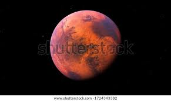
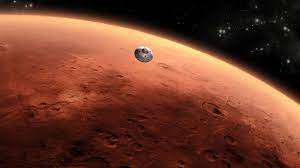

| Home | The Energy Server Of Planet Earth | The Space | Dreams Come True | Mission Moon | The Black Hole | News |
Once, going to the moon was a dream to human. By the deveplopment of mankind has completed some of impossible Dreams.
The Apollo-11 was one of the greatest missing in history.
Mission moon is one of the completed dream
The Mars Orbiter Mission (MOM), also called Mangalyaan,[a][11][12] was a space probe orbiting Mars since 24 September 2014. It was launched on 5 November 2013 by the Indian Space Research Organisation (ISRO).[13][14][15][16] It was India's first interplanetary mission[17] and it made ISRO the fourth space agency to achieve Mars orbit, after Roscosmos, NASA, and the European Space Agency.[18] It made India the first Asian nation to reach the Martian orbit and the first nation in the world to do so on its maiden attempt.[19][20][21][22]
The Mars Orbiter Mission probe lifted-off from the First Launch Pad at Satish Dhawan Space Centre (Sriharikota Range SHAR), Andhra Pradesh, using a Polar Satellite Launch Vehicle (PSLV) rocket C25 at 09:08 UTC on 5 November 2013.[5][23] The launch window was approximately 20 days long and started on 28 October 2013.[6] The MOM probe spent about a month in Earth orbit, where it made a series of seven apogee-raising orbital manoeuvres before trans-Mars injection on 30 November 2013 (UTC).[24] After a 298-day transit to Mars, it was put into Mars orbit on 24 September 2014.
The mission was a "technology demonstrator" project to develop the technologies for designing, planning, management, and operations of an interplanetary mission.[25] It carried five scientific instruments.[26] The spacecraft was monitored from the Spacecraft Control Centre at ISRO Telemetry, Tracking and Command Network (ISTRAC) in Bengaluru with support from the Indian Deep Space Network (IDSN) antennae at Bengaluru, Karnataka.[27]
On 2 October 2022, it was reported that the orbiter had irrecoverably lost communications with Earth after entering a seven-hour eclipse period in April 2022 that it was not designed to survive.[28][29][30] The following day, ISRO released a statement that all attempts to revive Mangalyaan had failed and officially declared it dead, citing the loss of fuel and battery power to the probe's instruments.[31]
|
The Mars Orbiter Mission (MOM), also called Mangalyaan,[a][11][12] was a space probe orbiting Mars since 24 September 2014. It was launched on 5 November 2013 by the Indian Space Research Organisation (ISRO).[13][14][15][16] It was India's first interplanetary mission[17] and it made ISRO the fourth space agency to achieve Mars orbit, after Roscosmos, NASA, and the European Space Agency.[18] It made India the first Asian nation to reach the Martian orbit and the first nation in the world to do so on its maiden attempt.[19][20][21][22] |
 |
|  |
On 23 November 2008, the first public acknowledgement of an uncrewed mission to Mars was announced by then-ISRO chairman G. Madhavan Nair.[32] The MOM mission concept began with a feasibility study in 2010 by the Indian Institute of Space Science and Technology after the launch of lunar satellite Chandrayaan-1 in 2008. Prime Minister Manmohan Singh approved the project on 3 August 2012,[33][34] after the Indian Space Research Organisation completed ₹125 crore (US$16 million) of required studies for the orbiter.[35] The total project cost may be up to ₹454 crore (US$57 million).[13][36] The satellite costs ₹153 crore (US$19 million) and the rest of the budget has been attributed to ground stations and relay upgrades that will be used for other ISRO projects.[37]
|
Some of the scientists and engineers involved in the mission include:[44]
K. Radhakrishnan led as Chairman ISRO.
Mylswamy Annadurai was the Programme Director and in charge of budget management as well as direction for spacecraft configuration, schedule and resources.
S Ramakrishnan was a Director who helped in developing the liquid propulsion system of the PSLV launcher.
P. Kunhikrishnan was a Project Director in the PSLV programme. He was also a Mission director of PSLV-C25/Mars Orbiter Mission.
Moumita Dutta was the Project manager of the Mars Orbiter Mission.
Nandini Harinath was the Deputy Operations Director of Navigation.
Ritu Karidhal was the Deputy Operations Director of Navigation.
BS Kiran was the Associate Project Director of Flight Dynamics.
V Kesava Raju was the Mars Orbiter Mission Director.
V Koteswara Rao was ISRO scientific secretary.
Chandradathan was the Director of the Liquid Propulsion System.
A. S. Kiran Kumar was the Director of the Satellite Application Centre.
M. Y. S. Prasad is the Director at Satish Dhawan Space Centre. He was also the chairman at Launch Authorisation Board.
S. K. Shivakumar was a Director at the ISRO Satellite Centre. He was also a Project Director for the Deep Space Network.
Subbiah Arunan was a Project Director at Mars Orbiter Mission.
B Jayakumar was an Associate Project Director at the PSLV programme who was responsible for testing the rocket systems.
MS Pannirselvam was the Chief General Manager at the Sriharikota Rocket port and was tasked to maintain launch schedules.